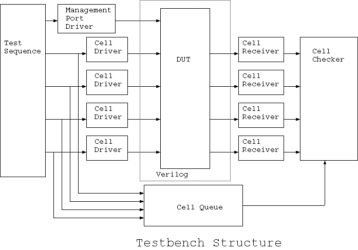

2. Verification Environment
As this is a single DUT verification, the verilog testbench (squat_test.v) simply contains one squat (DUT) instance and one Jeda module instance. This testbench is created automatically by Jeda template generator 'jedatemp'. This process will be shown in Chapter 5. Portset Construction.The Jeda side of the testbench structure is shown in the following diagram.

The following Chapters show how to construct elements in the testbench step by step.